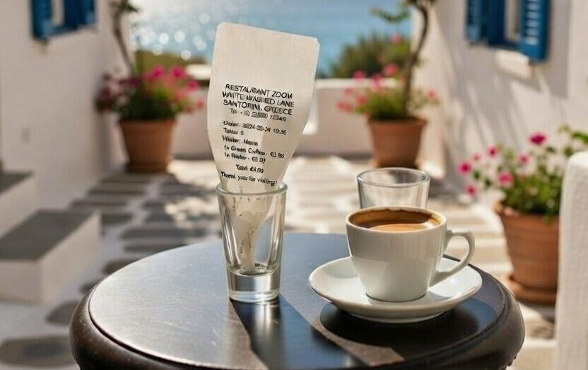
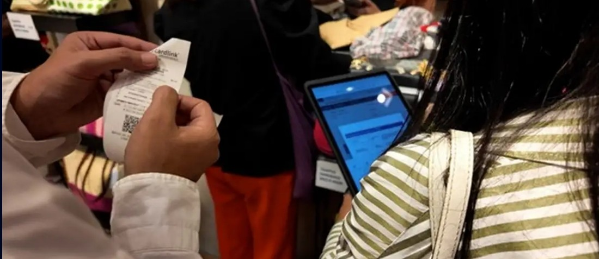
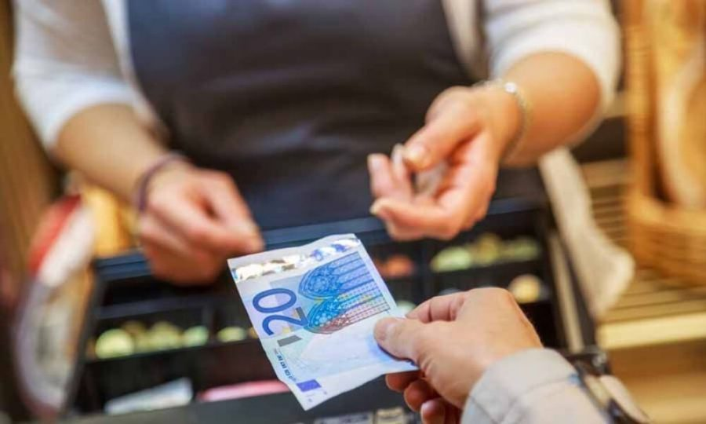

Kassabon in een glaasje
Velen vragen zich af waarom er kleine glaasjes met de kassabon erin op tafel staan. En waarom bij de één wel en bij de ander niet?
“Is dit omdat de ober vergeet wat u gedronken heeft?”
Waarom staat er een kassabon in een glaasje op je tafel?

Velen vragen zich af waarom er kleine glaasjes met de kassabon erin op tafel staan. En waarom bij de één wel en bij de ander niet?
“Is dit omdat de ober vergeet wat u gedronken heeft?”

Als je ergens iets gaat drinken, is men verplicht het bedrag direct op de kassa aan te slaan en het bonnetje op de tafel te leggen. Zo kan de belastingdienst (die regelmatig controleert) meteen zien of alle drankjes zijn aangeslagen.

In Griekenland werkt men met zogenaamde witte kassa’s. Als bedragen eenmaal zijn aangeslagen, kan men deze er niet zomaar meer uit verwijderen.
Bij eten zie je deze bonnen vaak niet op tafel: ze liggen dan achterin naast de kassa, anders zou het een warboel van bonnetjes worden.
Why is there a receipt in a little glass on your table?
Many people wonder why small glasses with the receipt inside stand on the table. And why at one place yes, at another no?
“Is it because the waiter forgets what you ordered?”
When you order a drink, the bar is required to ring it up on the till straight away and put the receipt on the table. That way the tax authorities (who check regularly) can see at a glance that every drink has been recorded.
Greece uses so-called white tills. Once amounts are entered, they cannot simply be removed again.
With food you often don’t see receipts on the table – they stay near the till, otherwise it would be a mess of slips.
Warum steht ein Kassenbon in einem Gläschen auf dem Tisch?
Viele fragen sich, warum kleine Gläser mit dem Kassenbon darin auf dem Tisch stehen. Und warum bei dem einen ja, beim anderen nicht?
„Vergisst der Kellner, was man getrunken hat?“
Beim Bestellen eines Getränks muss der Betrag sofort an der Kasse erfasst und der Bon auf den Tisch gelegt werden. So sieht die Steuerbehörde (die regelmäßig kontrolliert) sofort, ob alles verbucht ist.
In Griechenland gibt es sogenannte weiße Kassen. Einmal erfasste Beträge lassen sich nicht einfach wieder löschen.
Beim Essen liegen die Bons oft nicht auf dem Tisch, sondern bei der Kasse – sonst würde es ein Zettelchaos.
Perché c’è uno scontrino in un bicchierino sul tavolo?
Molti si chiedono perché ci siano piccoli bicchieri con lo scontrino dentro sul tavolo. E perché in un locale sì e in un altro no?
«Il cameriere dimentica cosa hai bevuto?»
Quando ordini qualcosa da bere, il locale deve registrare subito l’importo in cassa e lasciare lo scontrino sul tavolo. Così il fisco (che controlla regolarmente) vede subito se tutto è stato registrato.
In Grecia si usano le cosiddette casse bianche: una volta registrati, gli importi non si possono semplicemente cancellare.
Con il cibo spesso non vedi gli scontrini sul tavolo: restano vicino alla cassa, altrimenti sarebbe un caos di pezzetti di carta.
Neden masada küçük bir bardakta fiş duruyor?
Birçok kişi masada içindeki fişle küçük bardakların neden durduğunu merak eder. Bir yerde var, diğerinde yok?
«Garson ne içtiğinizi mi unutuyor?»
Bir şey içtiğinizde tutarın hemen kasaya işlenmesi ve fişin masaya konması zorunludur. Böylece vergi dairesi (sık kontrol eder) her şeyin kayda geçtiğini hemen görür.
Yunanistan’da beyaz kasalar kullanılır. Tutar bir kez işlendi mi kolayca silinemez.
Yemekte fişler çoğu zaman masada değil, kasanın yanında durur; yoksa fiş karmaşası olur.
¿Por qué hay un ticket en un vasito sobre la mesa?
Muchos se preguntan por qué hay vasitos pequeños con el ticket dentro en la mesa. ¿Y por qué en un sitio sí y en otro no?
«¿Es que el camarero se olvida de lo que has bebido?»
Cuando pides una bebida, el local debe registrar el importe en caja al momento y dejar el ticket en la mesa. Así Hacienda (que controla a menudo) ve de un vistazo que todo está registrado.
En Grecia se usan las llamadas cajas blancas. Una vez registrados, los importes no se pueden borrar fácilmente.
Con la comida a menudo no ves los tickets en la mesa: quedan junto a la caja, si no sería un lío de papeles.